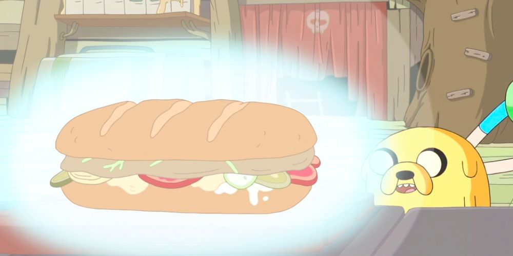

Jake's most delicious sandwich

Descreption
Jake's most delicious sandwich is, according to Jake, "the greatest sandwich [he's] ever made."
Ingredients
- Baguette
- Cream cheese
- Pickles (from Prismo)
- Dill
- Eggs
- Bird (from the window)
- Cucumbers
- Roma tomatoes
- Sweet yellow onions
- Tears (for salt)
- Meat
- Bacon
- Lobster
Steps
- Sous-vide the meat with rosemary and thyme (135 degrees)
- Toast the baguette
- Smear cream cheese on both sides
- Put pickles on the bottom side and dill on the upper
- Hard boil the eggs and dice them, put on the pickles
- Prepare the bird, toss it on the sandwich
- Next, put diced cucumbers, tomatoes and onion on top
- Cry on the sandiwch a little
- Meat should be ready by now, toss it on the sandwich
- Fry some bacon, put it on top
- Now, for the most important part, put the lobster into boiling water and then wave at his sould to get into the sandwich
- Put both sides together and enjoy your perfect sandwich!